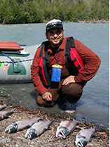
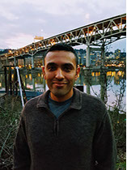

The Action Mapping Project Team
Matt Kelley, PhD - Project Lead
Associate Professor
Urban Studies, UW Tacoma
mjk3ll3y@uw.edu
After earning a Ph.D. in Geography from Pennsylvania State University in 2007 and then spending a year teaching at Bucknell University, Matt Kelley came to UW Tacoma.
He directs and teaches in the Geographic Information Systems (GIS) Certificate Program, where his teaching focuses largely on the application of geospatial technologies and geographic information systems to urban social and environmental problems. His research is similarly focused on the role that emerging technologies can play in the urban community development process.
He has worked extensively with community organizations in Los Angeles, Philadelphia, and Tacoma to think creatively about utilizing digital tools in their day-to-day operations, to both improve the effectiveness of their outcomes and amplify the voices and knowledge of local residents.
Dr. Kelley's recent research activities have aimed to engage critically with the ways that conventional spatial data are used to represent, and mis-represent, distressed urban neighborhoods.
Garrett Stone - Project Manager
Graduate Research Assistant
Urban Studies, UW Tacoma
gmstone@uw.edu
Garrett earned his Bachelor's degrees in Modern American History and Geography in 2011 from Syracuse University. After a 5 year hiatus from school, he applied to the UW Tacoma GIS Certificate program, successfully completing it in 2016; he was then accepted into the newly developed Community Planning graduate program that same year.
He is currently a research assistant in the Urban Studies department, working under both Drs. Ali Modarres and Matt Kelley on various projects, primarily focusing his reasearch on demographic, economic, and quality of life indicators across several South Sound communities.
He when not staring at Census data spreadsheets, he likes to contemplate on the existance of boundaries and speculate on interactions at social and phsical edges.
He identifies as a geographer, planner (to-be), climber, dog lover, plaid-wearer, and veteran.
Matt Seto - Geospatial Manager
Graduate Student, MSc Geospatial Technologies
UW Tacoma
setom@uw.edu
Matt is a currently a graduate student at University of Washington-Tacoma in the Geospatial Technologies program and scheduled to complete a Master of Science in summer 2018.
He graduated from UWT with a BS in Computer Science and has worked in the industry for a Seattle-area startup creating secure file sharing products for Fortune 500 companies.
In his spare time Matt can be found in the mountains, on a bike, or on skis.
Learn more about him and his work on his portfolio
Community Mapping Mentors
-
Leslie Kirk
lekirk@uw.eduLeslie Kirk is a senior at University of Washington Tacoma, where she is majoring in Sustainable Urban Development.
She has been active in both CIVITAS as the organizations’ Community Outreach Coordinator, and GIS Society as President. Last year she received the Urban Studies Director’s award for Academic Excellence.
Besides raising her two young daughters, her outside interests include the local music scene and vegan baking/cooking. Several years ago, Leslie studied Audio Engineering and Music Business at Shoreline Community College.
Upon graduation in June 2018, she will receive a Bachelor or Arts degree and a Certificate in Geospatial Information Systems. Her future includes attending graduate school and beginning a GIS career that helps brings social equity into the urban planning process. -
Lidnsey Baldwin
lb88@uw.eduLindsey is finishing her Bachelors in Sustainable Urban Development, with a minor in Environmental Studies at the University of Washington Tacoma, where she also obtained a certification in Geospatial Information Systems in 2017. She is planning on starting the Masters in Geospatial Technologies in September 2018.
Outside of class, Lindsey has assisted the entry level GIS classes from Autumn quarter 2017 to the current quarter. She helped start the GIS Society at the University of Washington, which she currently stands as Vice President. She also has volunteered at WAURISA, a GIS conference, where she was recognized for her hard-work with organizing, mediating talks, and answering questions.
During her free time, Lindsey likes to play videogames, look after her assortment of pets, and spend time with her family. -

Augustine Canales
mexsin13@uw.eduAugustine Canales is a junior at the University of Washington- Tacoma, currently majoring in Social Welfare and working towards a Certificate in Geospatial Information Systems. He is an active member in the both the GIS and Mockingbird societies.
Outside of school his main focus is his family; he and his wife Mindy have three children, Zant (17), Mariana (12), and Santiago (11). Other interests include camping, hiking, fishing, traveling, or any outdoor activity.
After graduating in 2019, he plans on applying for graduate school and eventually wants to integrate what he has learned about GIS with Social Welfare in order to help further his future career. -

Roger Hernandez
rogie@uw.eduRoger is a senior at the University of Washington Tacoma majoring in Sustainable Urban Development and working on a Certificate in Geospatial Information Systems. He will be graduating in June 2018.
Roger is married and has two dogs, Jett and Piper. He is an active outdoors enthusiasts who enjoys long distance running, kayaking, and camping. Other hobbies include riding motorcycles, traveling, and video games.
Roger is serving in the U.S. Army on active duty and stationed at Joint Base Lewis-McChord. Upon graduation, Roger will continue his military service, but plans to transition into a career in city planning and hopes to use his Geospatial Information Systems expertise in a professional setting.


{kind=link}
{kind=link}
{kind=link}